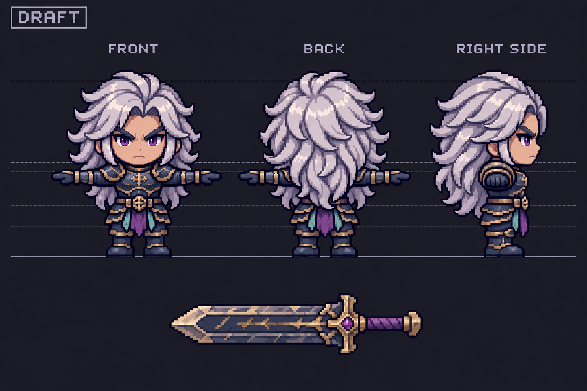

Tracefolio REPORTS & ISSUES
Tracefolio REPORTS & ISSUES 캠프 가디언작업 결과
캠프 가디언작업 결과드레이크 3면 T포즈 초안과 캐릭터 비율 선행 지침
검증 대기정면·후면·측면 T포즈 초안을 먼저 제시하고 사용자 확인 후 모션을 제작하도록 비율 지침과 기계용 제안 수치를 저장했습니다.
작업 결과
T포즈3면 초안·원본/프롬프트·비율 지침/JSON·웹 문서 저장 및 HTML 빌드 완료. 사용자 미승인 상태이며 기존 게임 모션은 변경하지 않았습니다.
변경 내용
적용 내용
사용자가 요청한 T포즈 선행 절차를 반영했습니다. 드레이크의 긴 은백색 머리·드러난 얼굴·청흑 철갑/낡은 황동·자주/청록 천·양손 특대검을 같은3면 기준판에 제시했습니다. 최초 이미지와 보정본,정확한 내장 imagegen 프롬프트를 보존했습니다.
docs/character-proportions.md와 art/style/character-proportions.json에46px신체/머리22·몸통골반12·다리부츠12,64×64몸체/80×80출력/발(32,56)→(40,64)을 검토용 제안으로 명시했습니다. 머리카락·무기 바운딩 박스로 몸체를 줄이지 않고 승인 리그와 격자로 배율을 정하도록 규정했습니다. 생성 프레임은 실제 의미를 확인해 피격/사망을 연결합니다.3면 T포즈→사용자 확인→기준판/리그 고정→동작 제작 순서를 프로젝트/아트 지침과 웹 문서에 연결했습니다.

검증
생성된3면 초안을 직접 열어 정면/후면/측면과 공통 바닥선,큰 머리·짧은 몸 및 장비 분리를 확인했습니다. 첫 시안의 잘못된 숫자 가이드를 제거하고 머리 비중을 보정했습니다. 이미지의 정확한 논리 픽셀 수치는 아직 측정/승인하지 않았으며 런타임용 시트로 등록하지 않았습니다. node docs/build.mjs 성공:15페이지/관계도7/이미지432. 게임 시트·전투 로직 변경,별도 테스트/게임 실행은 수행하지 않았습니다.
남은 사항
사용자의 비율·얼굴·갑옷·장비 시안 확인이 필요합니다. 승인 후 정확한 신체 랜드마크 측정·제작기의 배율 방식 수정·동작별 디자인 통일·프레임 의미/피격·사망 연결 검증이 남습니다. 전체 캐릭터 일괄 재제작과 드레이크 기존 모션 수정은 진행하지 않았습니다. 중앙 등록/푸시/배포는 별도 확인합니다.
작업 시간
- 제안 시간: 2026-11-18 17:15:15 KST 시작,5~10분 예상.
- 실제로 완료된 시간: 2026-11-18 17:19:24 KST 초안/지침 저장·웹 문서 빌드 완료,실측4분9초. 중앙 등록은 이후 별도 진행합니다.
- XERJ: 미사용 — 현재 소스/시트·내장 imagegen 기준판 생성·직접 이미지 확인·제안 JSON/Markdown·웹 문서 빌드.